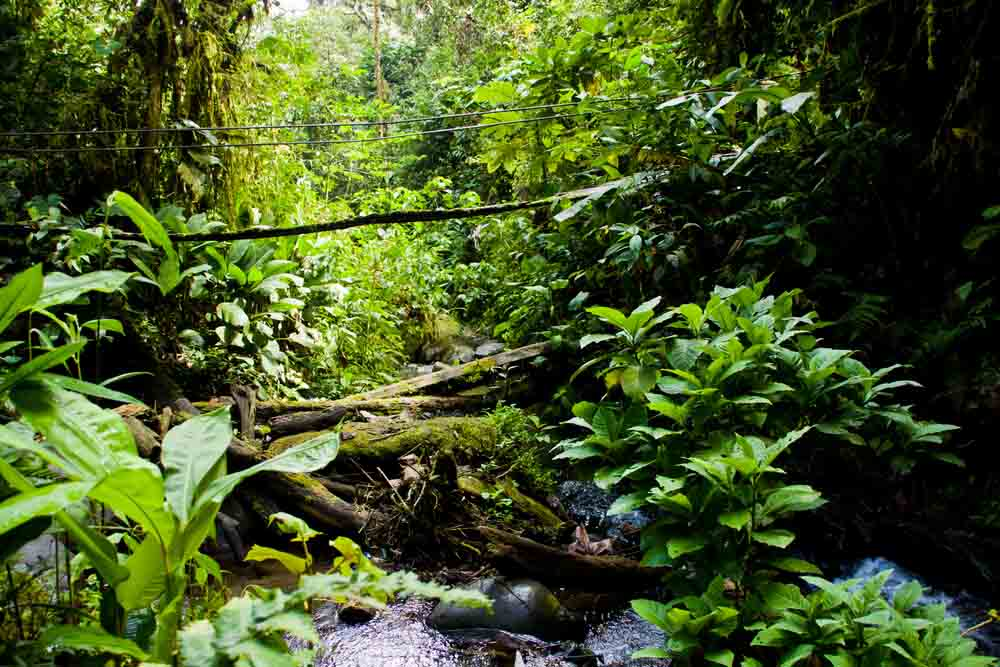

All About the Amazon Rainforest!

What is it?
A rainforest is an area of tall, mostly evergreen trees and a high amount of rainfall.
Rainforests are Earth’s oldest living ecosystems, with some surviving in their present form for at least 70 million years.
They are incredibly diverse and complex, home to more than half of the world’s plant and animal species—even though they cover just six percent of Earth’s surface. This makes rainforests astoundingly dense with flora and fauna;
a 10-square-kilometer (four-square-mile) patch can contain as many as 1,500 flowering plants, 750 species of trees, 400 species of birds and 150 species of butterflies.
Rainforests thrive on every continent except Antarctica. The largest rainforests on Earth surround the Amazon River in South America and the Congo River in Africa. The tropical islands of Southeast Asia and parts of Australia support dense rainforest habitats. Even the cool evergreen forests of North America’s Pacific Northwest and Northern Europe are a type of rainforest. .
Biotic Factors
Animals
Palms, Jaguars , Sloths, Black Spider Monkeys
Plants
Brazil-nut tree , Amazonian plant , Palms
Victoria Amazoica
amazonica also called Victoria regia is a
species of flowering plant, the second largest
in the water lily family Nymphaeaceae. It is
called Uape Jacana ("The Lilytrotter's Waterlily") in
Brazil and its Inca (Quechua) name is Atun Sisac ("great flower"). Its native region is tropical South America, specifically Guyana and the Amazon Basin.
The Victoria amazonica has very large leaves (lamina) (and commonly called "pads" or "lily pads"), up to 3 m (10 ft) in diameter, that
float on the water's surface on a
submerged stalk (petiole), 7–8 m (23–26 ft)
in length, rivaling the length of the green anaconda, a snake local to its habitat.
.jpg)
Abiotic Factors
Abiotic Factors The annual rainfall in the Amazon Rainforest is from around 1500mm to 3000mm. The average temperature is 76o F and temperatures range from 71oF to 91oF. The rainforest is pretty humid. The soil quality inside the Amazon is poor, without any nutrients.
.jpg)